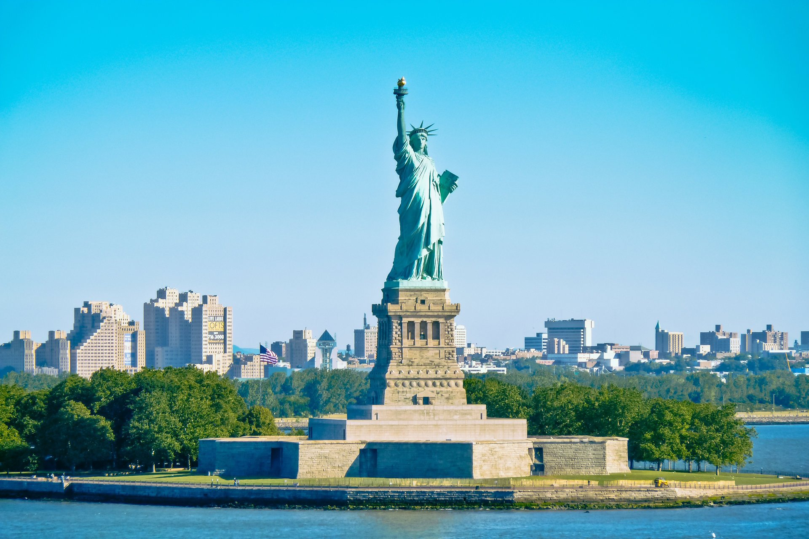
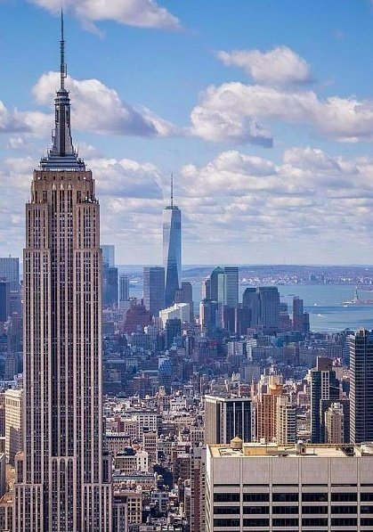

Соединённые Штаты Америки (США)
США – одно из крупнейших и влиятельнейших государств современного мира.
Оно находится в Северной Америке и является четвертым по территории после России, Канады и Китая.
Соединенные Штаты Америки – это многоликая и разнообразная страна, которая внесла весомый вклад в мировую культуру и науку.
Она способна предложить путешественникам почти все, чем богат современный мир или природа: от чудес Гранд каньона, Великих озер,
гор и тихоокеанского побережья до мегаполисов Нью-Йорка, Лас-Вегаса и Майами.
Здесь можно насладиться видом китов в Орегоне, катанием на лыжах в Скалистых горах, клубным обществом в Сан-Франциско,
посмотреть несравненные представления и азартные игры в Лас-Вегасе или посетить театральные постановки в перерыве между
походами по магазинам Манхэттена.
Статуя свободы

Статуя была изготовлена во Франции под руководством Огюста Бартольди, которого на создание колосса вдохновила победа антирабовладельческих сил в гражданской войне в США.
Изготовление статуи, её транспортировка и установка длилась порядка десяти лет. За это время её рука, держащая факел, побывала на Всемирной выставке (1876),
проводившейся в Филадельфии. После окончания работ в 1884 году её разобрали, элементы сложили в ящики и в июне 1885 года доставили в США,
где полным ходом шли работы по возведению пьедестала. Возведение пьедестала началось в 1885 году под руководством архитектора Ричарда Морриса Ханта.
Статуя Свободы была торжественно открыта 28 октября 1886 года президентом США Гровером Кливлендом.
Является национальным памятником США. С 1984 года входит в список Всемирного наследия ЮНЕСКО.
Статуя Свободы — второй по высоте маяк страны (после Мемориала Победы Перри и мира во всём мире, высота которого составляет 107 м),
однако она выполняет световую навигационную роль для морских судов как свою вторичную функцию, поэтому в списки маяков страны её не включают.

Вид на Эмпайр-стейт-билдинг и Манхэттен
Площадь страны поистине огромна – 9,5 млн км², причем на континентальную часть, самую большую, приходится 7,83 млн км².
Остальные регионы – это штаты Аляска (с прилегающими островами) и Гавайи, состоящие из 24 островов – отстоят отдельно от материковой части США.
Население страны, по оценкам на январь 2017 года, составляет 324 932 000 человек – это третье место в мире после КНР и Индии.
Столица США – город Вашингтон, крупнейшие города: Нью-Йорк, Чикаго, Лос-Анджелес, Майами, Сан-Франциско, Филадельфия, Хьюстон,
Сиэтл и Бостон.